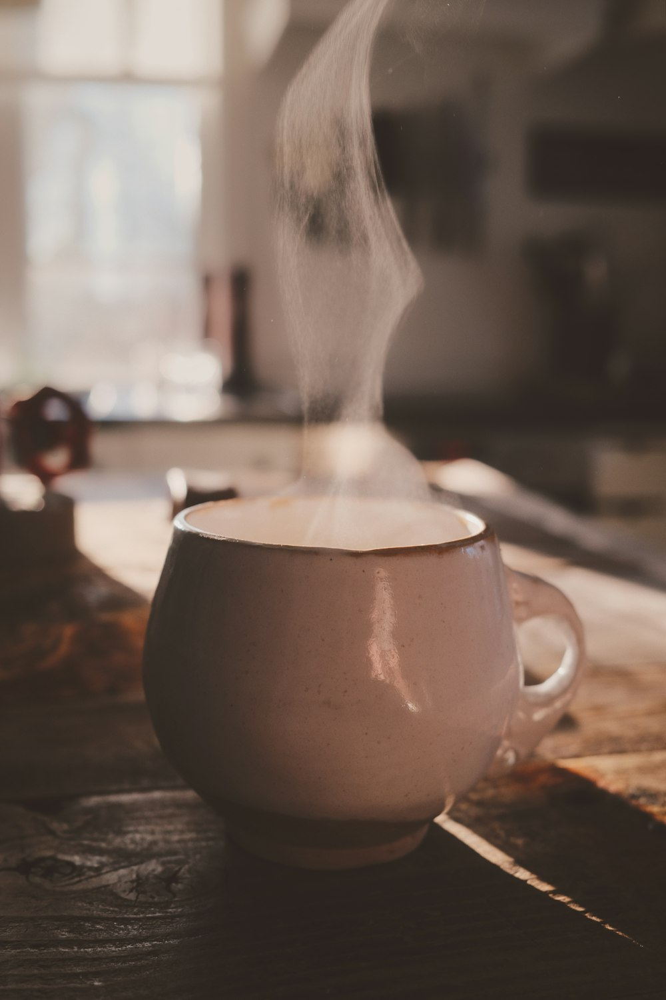

Why you keep so many tabs open, and how to let them go
Short answer
Most open tabs aren't being read. They're reminders of things you haven't finished, and closing one feels like dropping the thought it holds. Tabs stop piling up once that reminder has somewhere safe to live: then you can close the tab and trust it will come back with everything that went with it.

A tab is a reminder
Look along your tab strip and name what each tab is for. Few of them are being read right now. The rest say I'm still choosing a camera, I'm planning the trip, I'll answer this on Monday. The tab is how you remember the job exists.
Why closing feels risky
Chrome's other places to keep things don't hold the whole thought. A bookmark keeps one page, not the five that went with it or why you opened them. History has every page, in one long list by time. An open tab is the only thing that stays in view, in the order you left it, next to the pages it belongs with. So leaving it open feels like the safe choice, and the strip grows.
What the pile costs
- Time. Finding the tab you need means scanning a row of favicons, often longer than opening the page again.
- Memory. Each open tab keeps its page in memory. What your tabs cost, and what helps.
- Attention. Every glance at the strip is a glance at everything unfinished.
Habits that help
- Close by task, not tab by tab. Deciding about thirty tabs one at a time is tiring; deciding about four tasks isn't.
- Save the set, not the page. When you put something down, keep every tab that went with it, under a name you'll recognise.
- Keep the always-open set small. Pin mail, calendar and chat, and let everything else come and go.
- Have one place to look. If what you put away is always in the same place, closing stops feeling like losing.
- Look once a week. Bring back what you're ready for, and let go of what you've finished.
Where Simmer fits
Simmer does the first four for you. It reads your open tabs and names the things you're in the middle of, from what opened what, your tab groups and the tab titles, on your computer. Put a task on the back burner and every tab of it is saved, then closes. Mail, chat and calendars stay open. In the morning Simmer shows what you were in the middle of yesterday, and Bring back reopens a whole task, in its group.
Nothing happens before you press Start, and everything Simmer does is listed under Recently with Undo. For the practical steps, see how to close all your tabs without losing them.
Questions
- How many tabs is too many?
- When finding the tab you need takes longer than opening the page again, or when you keep tabs open only so you don't forget something.
- Why do I keep so many tabs open?
- Usually because each tab is a reminder of something unfinished, and closing it feels like losing the thought. Saving the set of tabs with a name makes closing them feel safe.
- Should I bookmark tabs instead of keeping them open?
- Bookmarking all tabs with Ctrl+Shift+D (⌘+Shift+D on a Mac) keeps a set in one folder. It works best if you name the folder after the task, and look through the folders now and then.
- Does Simmer decide what to close?
- It suggests tasks you haven't touched for a while, and nothing is closed before you press Start. Pinned tabs, the active tab, mail, chat and calendars always stay open.